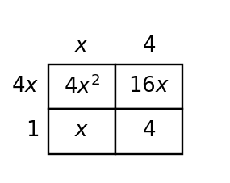
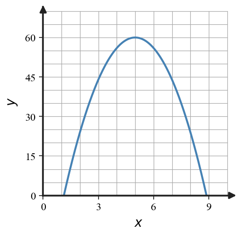

Each table shows outputs at equally spaced inputs. Circle the tables with a constant ratio between consecutive outputs.
| $x$ | 0 | 1 | 2 | 3 |
|---|---|---|---|---|
| Table A | 7 | 14 | 28 | 56 |
| Table B | 3 | 8 | 13 | 18 |
| Table C | 81 | 27 | 9 | 3 |
Each table shows outputs at equally spaced inputs. Circle the tables with a constant ratio between consecutive outputs.
| $x$ | 0 | 1 | 2 | 3 |
|---|---|---|---|---|
| Table A | 7 | 14 | 28 | 56 |
| Table B | 3 | 8 | 13 | 18 |
| Table C | 81 | 27 | 9 | 3 |
Solution: Table A has ratio $2$ each step, and Table C has ratio $1/3$ each step. Table B has constant difference $5$, not a constant ratio. Circle Tables A and C.
Use constant ratios to complete the table, then decide whether the relationship is growth or decay.
| Input | 0 | 1 | 2 | 3 | 4 |
|---|---|---|---|---|---|
| Output | 384 | 192 | 96 |
Use constant ratios to complete the table, then decide whether the relationship is growth or decay.
| Input | 0 | 1 | 2 | 3 | 4 |
|---|---|---|---|---|---|
| Output | 384 | 192 | 96 |
Solution: The outputs divide by $2$ each step: $384,192,96,48,24$. Because the multiplier $0.5$ is between $0$ and $1$, this is decay.
Two methods are proposed for deciding whether the outputs 10, 15, 22.5, 33.75, 50.625 are exponential.
Use both methods, then explain which method gives stronger evidence for this pattern and why.
Two methods are proposed for deciding whether the outputs 10, 15, 22.5, 33.75, 50.625 are exponential.
Use both methods, then explain which method gives stronger evidence for this pattern and why.
Solution: First differences are $5,7.5,11.25,16.875$, so they are not constant. Ratios are $15/10=1.5$, $22.5/15=1.5$, $33.75/22.5=1.5$, and $50.625/33.75=1.5$. Ratios give stronger evidence because exponential patterns multiply by a constant factor.
Create two different short situations that both begin with 80 but use different exponential multipliers. One situation must be growth and one must be decay.
Create two different short situations that both begin with 80 but use different exponential multipliers. One situation must be growth and one must be decay.
Solution: Answers vary. Example growth: a website starts at $80$ views and doubles each day, giving $80,160,320,640$. Example decay: a medicine amount starts at $80$ mg and keeps $75\%$ each hour, giving $80,60,45,33.75$. The first multiplier is greater than $1$, so it is growth; the second is between $0$ and $1$, so it is decay.
Complete the coefficient-and-variable-power table for $18x^3-12x^2+6x$.
| Term | $18x^3$ | $-12x^2$ | $6x$ |
|---|---|---|---|
| Coefficient | _____ | _____ | _____ |
| Power of $x$ | _____ | _____ | _____ |
Complete the coefficient-and-variable-power table for $18x^3-12x^2+6x$.
| Term | $18x^3$ | $-12x^2$ | $6x$ |
|---|---|---|---|
| Coefficient | _____ | _____ | _____ |
| Power of $x$ | _____ | _____ | _____ |
Solution: Coefficients are $18$, $-12$, and $6$. Powers of $x$ are $3$, $2$, and $1$.
A student says the greatest common factor of $24x^2+36x$ is $6x$. Name a larger common factor and explain in one sentence why it is larger.
A student says the greatest common factor of $24x^2+36x$ is $6x$. Name a larger common factor and explain in one sentence why it is larger.
Solution: A larger common factor is $12x$ because $24x^2=12x(2x)$ and $36x=12x(3)$. It is larger than $6x$ because both the numeric factor and the whole expression still share another factor of $2$.
The area model shows a product. Write the total area as a sum and as a product.

The area model shows a product. Write the total area as a sum and as a product.
Solution: The area model has pieces $4x^2$, $16x$, $x$, and $4$, so the sum is $4x^2+17x+4$. The side labels show the product $(4x+1)(x+4)$.
Build a factored expression that expands to $15q^2-10q+20$. Show the common factor and the remaining polynomial.
Build a factored expression that expands to $15q^2-10q+20$. Show the common factor and the remaining polynomial.
Solution: The GCF of $15q^2$, $-10q$, and $20$ is $5$. Divide each term by $5$ to get $3q^2-2q+4$. A factored expression is $5(3q^2-2q+4)$.
Decide whether $4x(3x-2)+6(3x-2)$ is more useful in its current form or after factoring by grouping if the goal is to identify a common binomial factor. Rewrite it as one product.
Decide whether $4x(3x-2)+6(3x-2)$ is more useful in its current form or after factoring by grouping if the goal is to identify a common binomial factor. Rewrite it as one product.
Solution: The current form is useful because the common binomial $(3x-2)$ is already visible. Factor by grouping: $4x(3x-2)+6(3x-2)=(3x-2)(4x+6)=2(3x-2)(2x+3)$.
A garden design uses $6x$ small stones on each of $x$ paths and $18x$ border stones. Write an equivalent expression in factored form and explain the shared quantity.
A garden design uses $6x$ small stones on each of $x$ paths and $18x$ border stones. Write an equivalent expression in factored form and explain the shared quantity.
Solution: The expression is $6x\cdot x+18x=6x^2+18x$. The shared quantity is $6x$, so the factored form is $6x(x+3)$.
You need to factor $6x^2-x-2$. Construct an efficient strategy before starting: identify $ac$, the needed sum, how you will split the middle term, and how you will check the final product.
You need to factor $6x^2-x-2$. Construct an efficient strategy before starting: identify $ac$, the needed sum, how you will split the middle term, and how you will check the final product.
Solution: For $6x^2-x-2$, $ac=6(-2)=-12$. We need two numbers with product $-12$ and sum $-1$: $3$ and $-4$. Split the middle term: $6x^2+3x-4x-2$, group to get $3x(2x+1)-2(2x+1)$, so $(3x-2)(2x+1)$. Check by multiplying back.
A school club orders identical supply kits and extra replacement parts. Design a short context represented by $4p(3p+2)+8(3p+2)$, then rewrite it as one product and explain what the shared factor means in your context.
A school club orders identical supply kits and extra replacement parts. Design a short context represented by $4p(3p+2)+8(3p+2)$, then rewrite it as one product and explain what the shared factor means in your context.
Solution: Answers vary. Example: A club orders $4p$ kits and $8$ replacement packs, and each item type contains $(3p+2)$ supplies. Then $4p(3p+2)+8(3p+2)=(3p+2)(4p+8)=4(3p+2)(p+2)$. The shared factor $(3p+2)$ means each kit/pack has the same supply bundle.
Factor $2x^2-5x-12$.
Factor $2x^2-5x-12$.
Solution: Find numbers that multiply to $-24$ and add to $-5$: $-8$ and $3$. Therefore $2x^2-5x-12=(2x+3)(x-4)$.
Solve or interpret the quadratic situation for Solving Quadratics by Factoring. Show the algebra that supports your answer.
Complete the table, then decide whether $x=2$ and $x=5$ are zeros of $f(x)=x^2-7x+10$.
| $x$ | 2 | 5 |
|---|---|---|
| $f(x)$ |
Solve or interpret the quadratic situation for Solving Quadratics by Factoring. Show the algebra that supports your answer.
Complete the table, then decide whether $x=2$ and $x=5$ are zeros of $f(x)=x^2-7x+10$.
| $x$ | 2 | 5 |
|---|---|---|
| $f(x)$ |
Solution: $f(2)=2^2-7(2)+10=4-14+10=0$ and $f(5)=25-35+10=0$. Both $x=2$ and $x=5$ are zeros.
Reasonableness/Estimation Argument. Analyze the quadratic evidence for Solving Quadratics by Factoring. Write a conclusion and justify it with algebraic or graphical evidence.
A model gives solutions $t=-0.2$ and $t=3.4$ seconds. Decide which solution(s) are meaningful and justify using the context and the equation form.
Reasonableness/Estimation Argument. Analyze the quadratic evidence for Solving Quadratics by Factoring. Write a conclusion and justify it with algebraic or graphical evidence.
A model gives solutions $t=-0.2$ and $t=3.4$ seconds. Decide which solution(s) are meaningful and justify using the context and the equation form.
Solution: In a time context, a negative time such as $t=-0.2$ seconds usually is not meaningful after the event begins. The solution $t=3.4$ seconds is meaningful because it occurs after the start. The context determines which algebraic roots make sense.
Design A Model Or Context. Create or revise a quadratic task for Solving Quadratics by Factoring using the constraints below.
Use the provided graph as one representation. Design a launch-or-break-even context for a quadratic with two positive zeros; write a factored equation that matches the estimated intercepts and explain what both zeros mean in the context.

Design A Model Or Context. Create or revise a quadratic task for Solving Quadratics by Factoring using the constraints below.
Use the provided graph as one representation. Design a launch-or-break-even context for a quadratic with two positive zeros; write a factored equation that matches the estimated intercepts and explain what both zeros mean in the context.
Solution: Answers vary. One valid launch context is height $h(t)=-(t-1)(t-7)$, with zeros at about $t=1$ and $t=7$. The graph representation shows two positive intercepts, and the factored form makes those intercepts visible. In context, the zeros represent the two times the object is at ground level or break-even level.
The outputs are 6, 18, 54, 162. Is the pattern arithmetic, exponential, or neither? State the multiplier or difference.
A value keeps 72% of its previous amount each step. Is this growth or decay? Write the multiplier.
Solve: $(x-4)(x+7)=0$.
Factor out the GCF: $12x^3-18x^2$.
The outputs are 6, 18, 54, 162. Is the pattern arithmetic, exponential, or neither? State the multiplier or difference.
A value keeps 72% of its previous amount each step. Is this growth or decay? Write the multiplier.
Solve: $(x-4)(x+7)=0$.
Factor out the GCF: $12x^3-18x^2$.
Key: Exponential; the multiplier is $3$.
Key: Decay; the multiplier is $0.72$.
Key: $x=4$ or $x=-7$.
Key: $6x^2(2x-3)$.